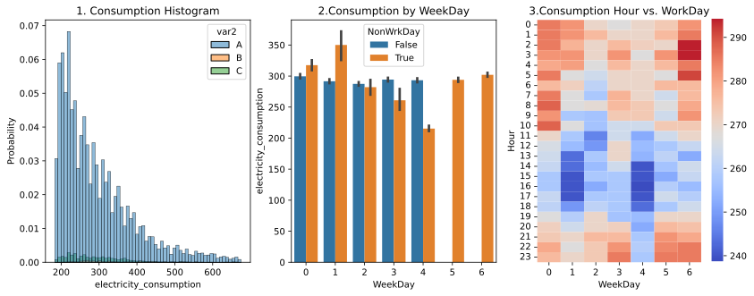
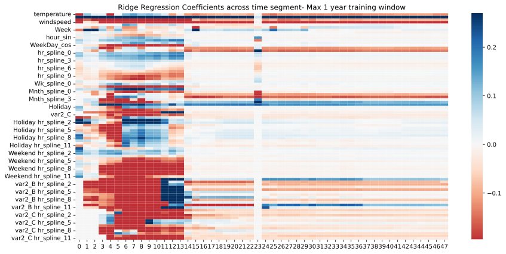
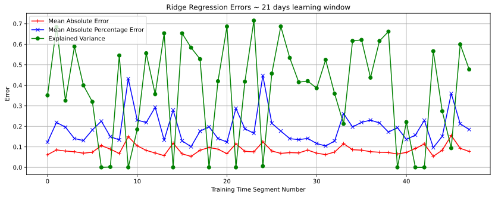
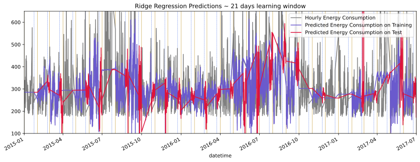
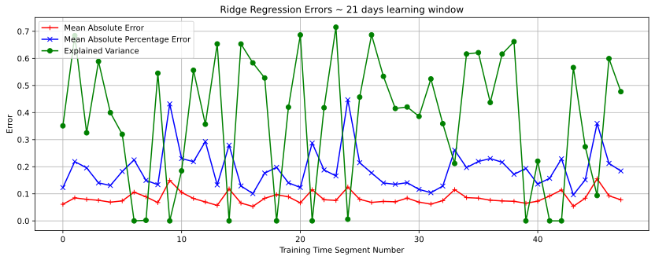
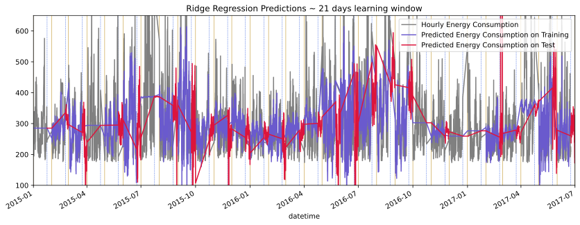

Forecasting & Prediction
Forecasting
Accurate Forecasting improves the predictabilty in the business envionment. Ability to predict the future based on past trend helps in planning, business budgeting and goal setting. The ability to accurately predict future demand and business size depends on the following:
- Historical data of time varying signature that has relevant and representative of trends, seasons and cycles
- Categorical encodings of key drivers and barriers of demand, not just temporal seasonal changes
- Clear understanding of attributable business initiaitves that lead to improved demand
- Robust pipeline for ingestion, quality assurance and orchestration- every time step of prediction is usually like a new prediction problem and needs automation
- Model decisions that don't violate causality and validation consistent with the direction of time
Then offcourse there are unforeseen drivers such as COVID-19 pandemic and the war in Ukraine. Predicting the future in such situations require playing out "what if?" scnerios on historical data to curate specific facets of historical data to see how the lomg term trend gets affected. And this is really where business knowledge plays a role more so than any machine learnign techniques
Some of the reasons (but not limited to) why Forecasting projects fail are as follows:
- Poor choice of target metrics. A Forecasting target metrics ought to be atomic and granular and seldom compound corporate KPIs make great candidates
- Upstream data quality in all likelyhood shall play havoc in stability and reliability of prediction in
- Univariate timeseries models are often used as a quick way to get around challenges of acquiring multivariate data and leads to sub par performance
Illustrative Example
The example below is from a energy consumption forecasting use case. The energy consumption is for circa 4 years at an hourly level

The problem is predict the energy consumption for the test set that is intersparsed across all 4 years for different lengths of time at an hourly level. These are the biege colored vertical lines in the above figure.
Model Topology

The above diagram is a compact way to visualize the prediction problem at hand. The bars are stacked count of data points in time that is consistent with causality- the orange are the group of points in test and the blue is the count of datetime data points in Training that precedes them. In effect for building prediction for each orange set the preceding blue set is to be used.
Overall, this problem is akin to building weekly/daily forecasts based on previous business performance and demand. As more history gets accumulated the ability to produce more accurate predictions improves into the future. For example in the 0th time segmnt the train/ set set sizes are almost similar whereas in the 47th time segment you nearly have 4 years worth history to predict circa 22 days.
Exploratory Analysis
- The histogram shows the consumotion metric renderd by a categorical variable with values A,B and C. It's data dictionary didn't sate what this is and it looks like values B,C are sparse meaning without some kind of sampling approach it is unlikely we shall see much stand alone impact in the prediction algorithm
- This bar graph shows the distribution of consumption across each day of the week, rendered by non working days. 5, 6 being Saturday and Sunday. It appears holidays in weekdays leads to higher consumption. A mental note to create a feature for holdiays..
- The heatmap shows weekends late in the night shows increased consumption and week days after midday shows lower load. This appears counter intuitive but each use case has it's own nicetities that we need to build on

- This scatter plot rendered by season shows that the variable var1 has little or no relationship/ causality with consumption
- This scatter plot looks samiliar to the first one. Giving reasons to think var1 and temperature are collinear.
- The windspeed has a inverse relationship with consumption. This is a non linear relationship and gives us opprotunities to model differently

- pressure and consumption shows little relationship
- Temperature shows linear decreasing relationship
- Same applies for var1
Feature Engineering

Prediction
Long Term Window


Short Term Window
 


